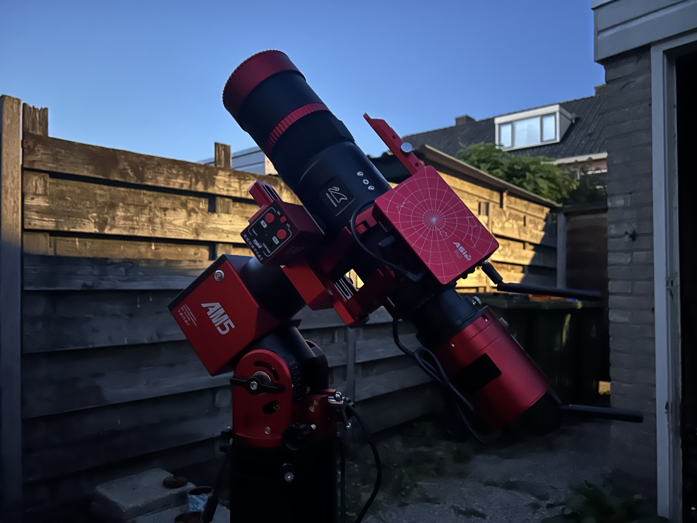

Collect the light
The telescope gathers light and forms the image that the camera records.
Behind the photographs
From a garden setup to distant clouds of light. Explore the equipment in this photograph, one component at a time.
Select a numbered marker or a component below. This is the setup pictured, not a live equipment inventory.

ASIAIR Plus: the photographer describes this as a dew-heater power test. It is not the heater itself; no wiring or power configuration is being recommended here.
The telescope gathers light and forms the image that the camera records.
The mount tracks the sky. Guiding helps correct tracking errors during long exposures.
The electronic focuser makes controlled adjustments to the telescope's focus.